Git code review
Zoptymalizuj swój flow sprytnymi trickami, dobrymi praktykami i przydatnymi narzędziami
Tomasz Skraskowski

- Backend developer at Pirios S.A.
- Writes code since 12
- Currently .Net (Core), previously C++
- Interested in decentralized systems
- www.SoftwareDeveloper.Blog
Krzysztof Morcinek

- @ Pragmatic Coders
- 10 years in .NET stacks
- Last year in JAVA
- krzysztofmorcinek.wordpress.com
- Screencast: Show me the code
GitWarsztaty w Twojej firmie
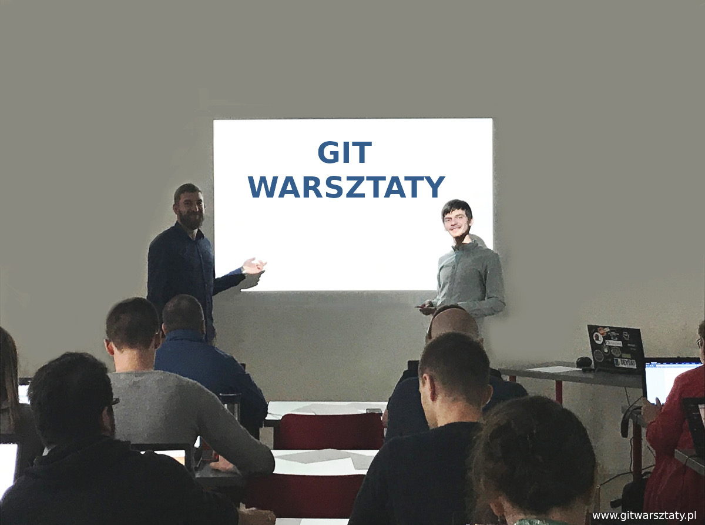
Agenda:
Pytajcie w trakcie na chacie - odpowiemy async po skończonych sekcjach
- Powtarzające się uwagi - automatyzować, a może nie reagować?
- Jak unikać flame Wars?
- Kod jest !#@$ - jak dawać konstruktywny feedback.
- Kod działa, ale nie jest umieszczony w odpowiednich "miejscach". W jakich warunkach taki kod przepuścić?
Agenda cd.
- Kandydat na nie robienie: <!--Zła kolejność argumentów - istotna czytelność, czy fanaberia?-->
- TLDR - za długie CR czy może coś, co trzeba bez CR "przepchnąć"?
- Jak namawiać do braku CR?
- Konieczny refactoring w trakcie feature'a - jak to reviewowac?
- Przekrój CI: od startu projektu do code review
Nasz kontekst
it's better to ask forgiveness than permission
projekty gdzie dostarcza się business value, a nie security critical - różne części kodu będą miały różne wymagania w Code Review
zespoły same się organizują
Powtarzające się uwagi
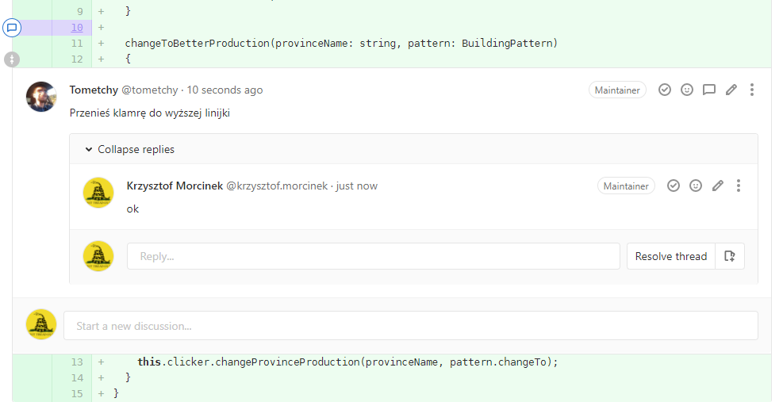
DEMO
Stylecop (prettier.io, checkstyle)

Stylecop cd.

PrefixLocalCallsWithThis - przykład że coś trzeba wybrać i się stosować.
... w dowolną stronę (z thisem, albo bez thisa)
Uniwersalne narzędzie do formatowania
Kolega ustawił indentation na 2 spacje - nigdy w życiu nie miałem takiego ustawienia. Ale dzięki temu że jest to wymuszone to nie narzekam i się przyzwyczaiłem (chociaż przeformatowało cały projekt)
Testy konwencji
3 kawałki:
- pętla po wszystkich plikach w projekcie
- szukanie problemów w jednym pliku
- odpalenie tych testów podczas buildu
Przykład: wymóg aby wszystkie kolekcje były niemutowalne w C# (IReadOnlyCollection<>)
Powtarzające się uwagi
- automatyzować (jeśli się da)
- może nie reagować
Jak unikać flame wars

tabs vs spaces

Wy sami wiecie co odpuścić. Zachęcam żeby czasem odpuszczać.
Kod jest !#@$ - jak dawać konstruktywny feedback
Nie oceniamy osoby, merytorycznie opisujemy problem.
Proponujemy możliwe rozwiązania.
W CR nie tylko doszukujemy się potencjalnych problemów, dostrzegamy i doceniamy również to co ktoś napisał elegancko ;)
Kod działa, ale nie jest umieszczony w odpowiednich "miejscach". W jakich warunkach taki kod przepuścić?
Czy wymóc dostosowanie się? Jak zwykle - to zależy.
Jaki jest impact?
Najlepiej dla konwencji również mieć przygotowany automat, np. obiekty domenowe muszą być w projekcie kończącym się na Domain.
TLDR - za długie CR czy może coś, co trzeba bez CR "przepchnąć"?
- olbrzymi rename - nikt nie chce tego przeglądać
- olbrzymi rename i gdzieś logika się zmieniła
-

Oczyszczenie commitu (commitów) przed CR
- Fix typo
- Poprawa formatowania
- Zmiana namespace'u / folderu / pakietu

Jak namawiać do braku CR?
Przykłady gdzie warto się zastanowić
- jakiś projekt na wymarciu gdzie nie chcemy inwestować swojego czasu
- 1 osoba w nowym projekcie i nikt nie kwapi się do przeglądania (jeśli chodzi o dzienne review)
- ... !!! ale z pewnością co jakiś czas ktoś powinien doglądać w którą stronę to ogólnie idzie
- 2 osoby które ze sobą rozmawiają
- jeśli mam przeglądać ogromny MR TechLeada, który zmienia coś we frameworku (co mnie nie dotyczy)
Więc jak namawiać do braku CR?
Przemyśleć sobie czy da nam to więcej zysku niż zainwestowany w to czas.
- zakładam że proces jest w rękakach zespołu i możemy to sobie zmienić
- ... albo robić wyjątki
- może się okazać, że po pewnym czasie zespół się dociera i już na CR nie są wyłapytawne kardynalne błędy
- ... decyzje odnośnie architektury są wystarczająco dobrze przegadane przy kawach i kod powstaje w odpowiednich miejscach
Konieczny refactoring w trakcie feature'a - jak to reviewowac?
DEMO
Porównanie dwóch podejść
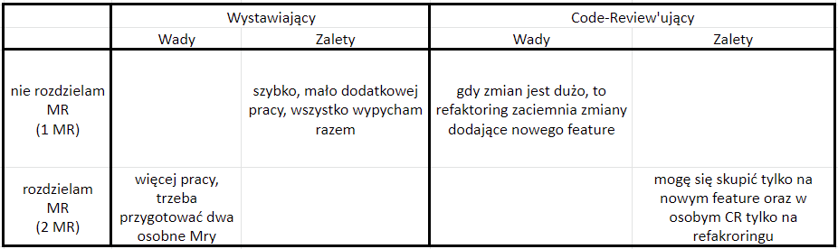
Porównanie dwóch podejść cd.
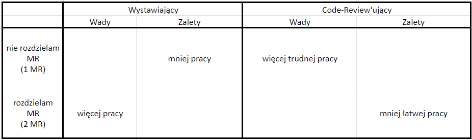
Od startu projektu do code review
Wybór flow commitów
☺ Jeden branch długo-żyjący
☹ Wiele branchy długo-żyjących
Wybór flow dołączania feature brancha do core brancha
- Basic merge
- Squash merge
- Rebase and fast-forward
- Rebase with merge commit
Basic merge
Da się wyciągnąć informację z historii, ale jest to trudne, czasami bardzo trudne.

Squash merge
Gdy feature branche są bardzo małe, da się coś wyciagnąć z historii, ale stosunkowo niewiele.
Ważna wiedza spoczywa poza repo - w zewnętrznym narzędziu.
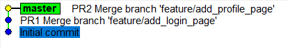
Rebase and fast-forward
Historia jest przejrzysta, można wyciągnąć z niej bardzo dużo.
Tracimy informacje o pullrequestach i 'zarys', które commity były w ramach jednego feature brancha.
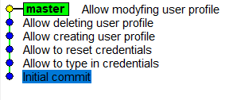
Rebase with merge commit
Historia jest przejrzysta, można wyciągnąć z niej wszystko.
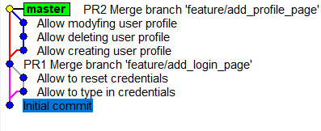
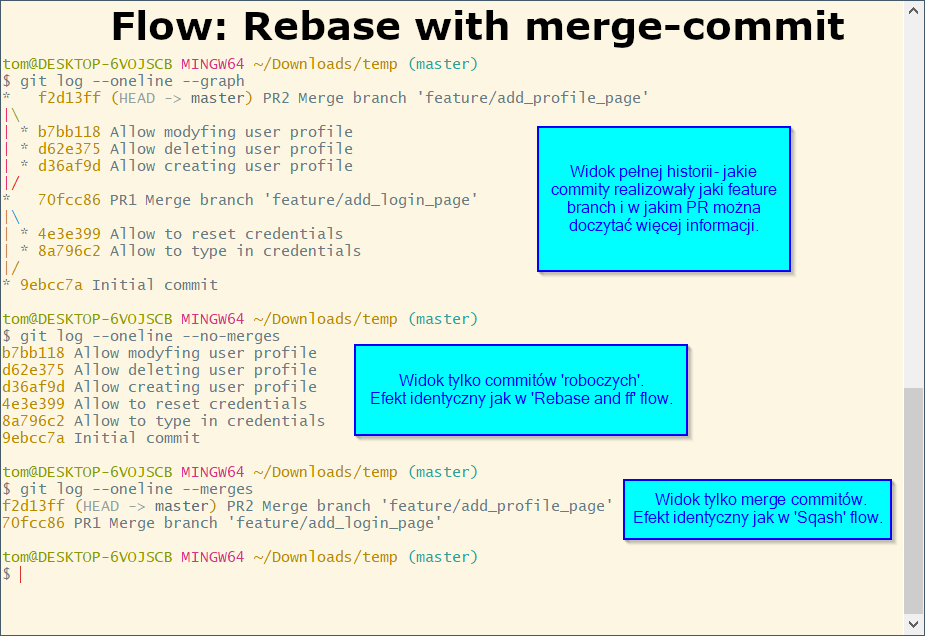
Wybór polityki ochronnej dla core brancha
Blokada bezpośrednich pushy do core brancha
Wszelkie zmiany możliwe tylko przez PR.
Polecane nawet, gdy pracujesz z samymi seniorami-wymiataczami,
a nawet gdy prowadzisz dany projekt samemu.

Branch policy - sposób dołączania feature brancha
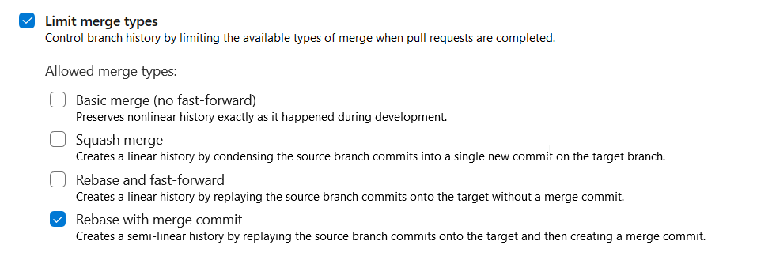
Branch policy - build pipeline

Branch policy - required approve
Minimum 1 wymagany approve (ale nie kliknięty przez siebie samego).
Ja polecam: wymagany 1 approve od kogoś z grupy Developers i 1 approve od kogoś z grupy Testers.
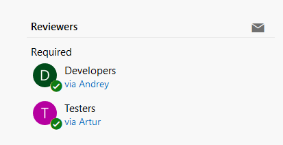
Branch policy - additional approve for specific project parts
Gdy zmienione są pliki ze wskazanej ścieżki, wymagany dodatkowy approve od użytkownika ze specifycznej grupy/roli. Przykładowo:
- Dla ścieżki
src/data-processing/*wymagany dodatkowy approve z grupy Performance specialist - Dla ścieżki
src/core-engine/*wymagany dodatkowy approve z grupy Senior developer - Dla ścieżki
src/ssl-library/*wymagany dodatkowy approve z grupy Security specialist
Branch policy - all comments resolved
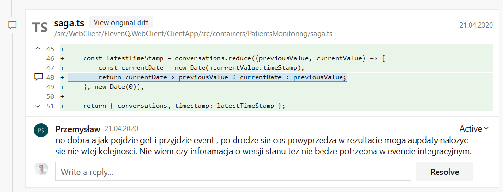
Branch policy - linked work item
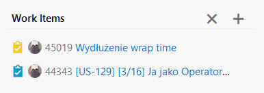
Przykładowy PR z branch policy
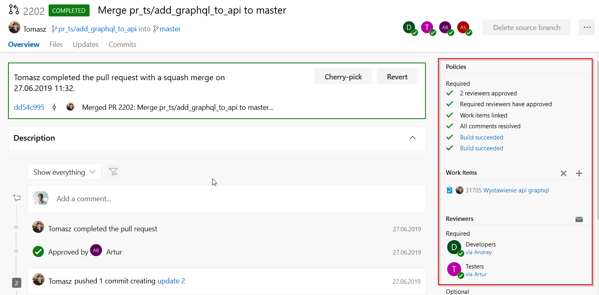
Zaczynamy nowy feature
- Tworzymy i pushujemy nowego feature brancha.
- Tworzymy nowy draft pull request, który będzie na bieżąco w trakcie pracy raportował nam stan z CI.
- Pracujemy tworząc i pushując małe commity często. Akceptowalne WIP/TEMP commity i
push --force-with-lease. Często też robimygit fetch && git rebase origin/master. - Porządkujemy historię, układamy commity w odpowiedniej kolejności, łączymy gdy trzeba, usuwamy niepotrzebne.
- Opublikowujemy drafta jako czekającego pull requesta i informujemy zespół.
Opublikowujemy pull requesta
- Upewniamy się, że description PR wprowadza reviuującego w temat
- Upewniamy się, że nie ma konfliktów lub czerwonych buildów
- Po raz ostatni przeglądamy diffa wszystkich plików
- Po raz ostatni przeglądamy listę commitów, które udostępniamy
- Jeżeli serwer to umożliwia, ustawiamy automat do zamknięcia PR
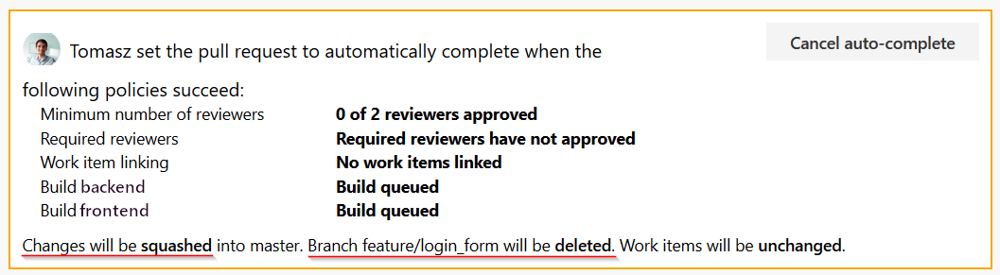
Zaczynamy code review
- Nie tykamy, jeżeli są konflikty lub buildy świecą się na czerwono
- Zapoznajemy się z descriptionem pull requesta
- Rzut oka na listę commitów
- Przeglądanie kodu
- W niektórych serwerach, komentarze mogą wskazywać zaznaczony tekst
- Jeżeli serwer to umożliwia, gdy wystawiający PR dostosuje się do uwag, my przeglądamy tylko nowo wypchnięte zmiany
- Wystawiający PR na zakończenie pilnuje usunięcia brancha
Niniejsza prezentacja w formie PDF
Prezentacja, na którą właśnie patrzysz, istnieje równiez w formie pdfa, niestety za pośrednictwem platformy webinarowej nie ma jak jej wysłać.
Jeżeli chciałbyś/chciałabyś ją sobie zachować, napisz do nas na kontakt@GitWarsztaty.pl i ją podeślemy.
Dziękujemy!